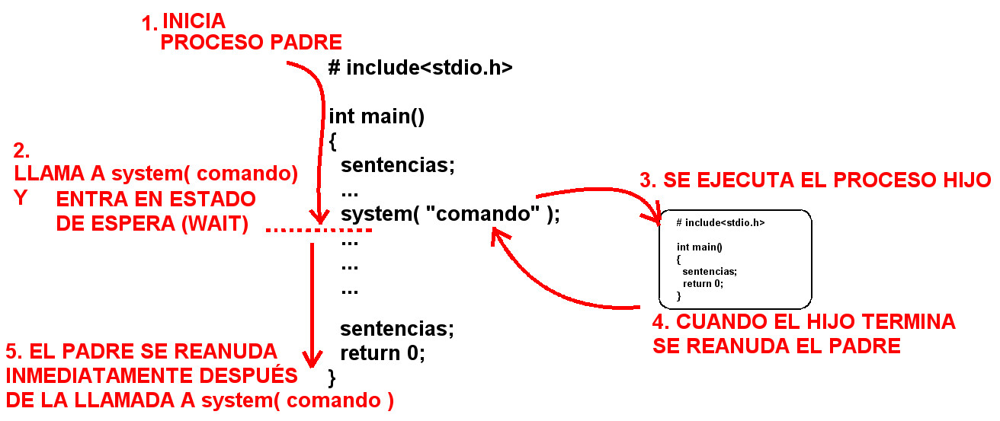
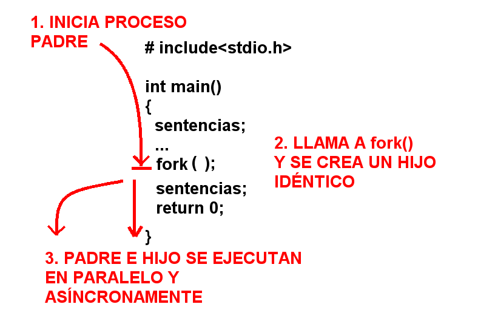
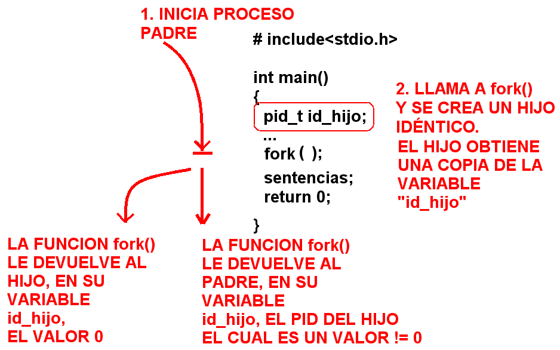
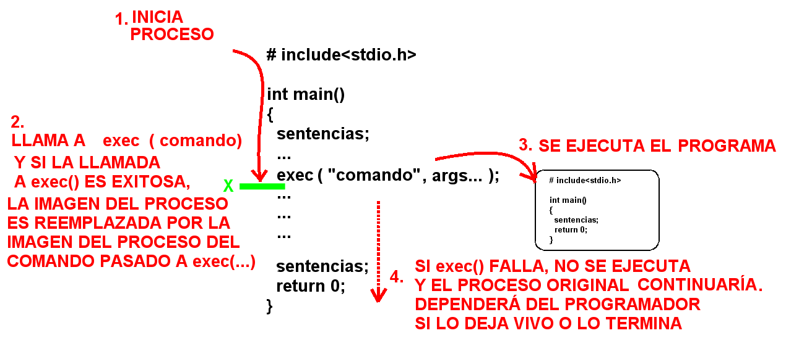
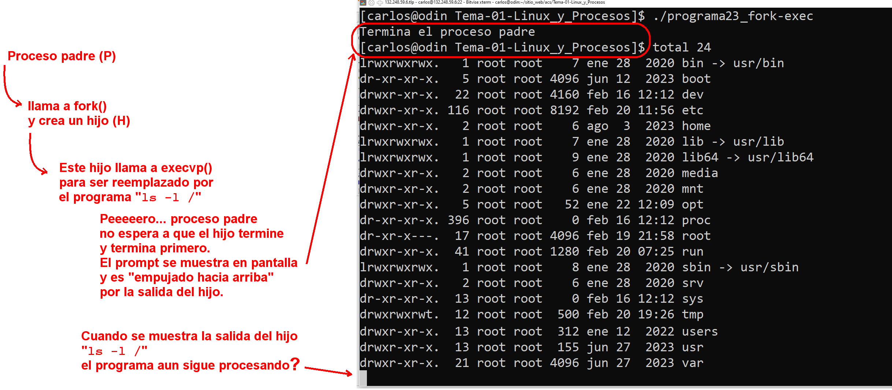

Mtro. Carlos Alberto Roman Zamitiz · Grupo 2 · carlos.roman@ingenieria.unam.edu · Martes y jueves · 07:00–08:30 · Salón A305
Clave FI: 2946
Objetivo: el alumno aplicará los conocimientos de protocolos, criptografía y seguridad para desarrollar programas bajo la arquitectura cliente/servidor mediante un lenguaje de programación.
| Núm. | Tema | Horas |
|---|---|---|
| 1 | Conceptos básicos | 6.0 |
| 2 | Creación de socket servidor y cliente | 10.0 |
| 3 | Servidores y clientes sincronizados | 10.0 |
| 4 | Sockets broadcasting y multicasting | 8.0 |
| 5 | Implantación de servidores con criptografía y código seguro | 8.0 |
| 6 | Herramientas para la comunicación entre servidores | 6.0 |
Todos los temas y subtemas del plan. En azul, lo que ya se vio en clase (enlaza a la clase). En gris, lo que falta.
Las 4 primeras clases fueron fundamentos de procesos en Linux (repaso de sistemas operativos; base para 1.6 y 1.7): imagen del proceso · system()/fork()/exec() · permisos y bit SetUID · errno · procesos huérfanos. Resúmenes: Clase 01 · 02 · 03 · 04. Código del profesor en Programas.
system(), fork() y exec().size, pmap, /proc/<PID>/maps, ps / ps aux / ps -eo, top.fork() crea una copia del padre (salvo PID/PPID): devuelve el PID del hijo al padre y 0 al hijo.chmod 4xxx) hace que el proceso tome el UID del dueño del archivo.size no muestra heap ni stack porque son dinámicos (solo existen en RAM con el proceso vivo).pmap: la memoria se asigna por páginas de 4 KB; las zonas dinámicas (stack/heap) nunca tienen permiso X (anti-inyección de código).ps -eo pid,ppid,…: las columnas van separadas por comas sin espacios o hay error de sintaxis.fork(): retorno pid_t (PID del hijo al padre / 0 al hijo); patrón if(id_hijo!=0); riesgo de deadlock.Entender los conceptos relacionados con los procesos, además de cómo identificarlos en un entorno Linux y las funciones system(), fork() y exec() para su creación.
Encuadre: la primera parte de la materia es "una continuación de sistemas operativos": primero procesos, después desarrollo de servidores. El curso se enfoca en un solo procesador (uniprocesador): no se ve programación multiprocesador ni multinúcleo. "Distribuido" aquí significa servidor en un host y cliente en otro, conectados por red.
profesores.fi-b.unam.mx/~carlos/acs es HTTP y está obsoleto.README.md del Tema 1 explica cómo levantarlo. No hace falta traer computadora — compila y ejecuta incluso desde el celular. Dentro tienes root (sudo o sudo su). Si rompes el sistema (rm -rf), destruyes el Codespace y creas otro; los programas vuelven intactos. Cerrar la pestaña lo suspende; se reactiva con el botón verde.132.247.*.* y 132.248.*.* son de la UNAM a nivel mundial. Las IP privadas (p. ej. 192.168.x.x) son internas y aisladas. El profesor se conectó por SSH a 132.248.77.168 [inaudible: también se transcribe como 132.247.248.7.168]."Open Group <función>" (ej. Open Group getpid).Definición del profesor: "una fotografía o instantánea". Un ejecutable en ejecución crea un proceso que vive mientras la ejecución esté viva; al terminar o cerrar, el proceso muere.
Procesos en segundo plano (background) o demonios (daemon): no son visibles ni interactúas con ellos en la terminal. Cerrar la interfaz gráfica de un programa no siempre mata su proceso.
Al ejecutar un binario, el SO carga en una zona de memoria independiente (espacio de direcciones propio) las áreas de código y datos.
Segmentos estáticos:
printf).Segmentos dinámicos:
malloc).Scope (ámbito) de una variable local = los límites de su función.
Tarea futura (todavía no): investigar file descriptors y la asignación dinámica de memoria (malloc).
⚠️ Examen — BCP / PCB (Process Control Block, "bloque de control de proceso"): estructura administrativa del kernel donde se guardan los metadatos del proceso. El profesor lo marcó como muy importante.
.c (con -o); así ls -l agrupa fuente y binario. Sin -o se genera a.out (mala práctica: el nombre no dice nada).getchar() para pausar y que el proceso no muera al instante — libera la memoria y muere hasta que pulsas Enter.data; global no inicializada → BSS; local → stack; reservada con malloc → heap; strings literales de printf → text.size servidor — análisis estático (mira el archivo en disco). Columnas: text, data, bss, dec (suma en decimal), hex (suma en hexadecimal), filename. Ejemplo: 1767 + 592 + 8 = 2367 dec = 0x93F [inaudible: la transcripción decía "3F"].
⚠️ Examen: ¿por qué size no muestra heap ni stack? Porque son dinámicos: solo existen en RAM cuando el proceso está vivo; size solo analiza el archivo estático en disco.
pmap <PID> (Process Map) — análisis dinámico: consulta las estructuras del kernel e imprime el mapa completo del proceso en RAM (stack, heap, librerías .so, direcciones físicas). El PID se obtiene con getpid() (de <unistd.h>).
pmap no cuadran con size porque el SO asigna memoria por páginas de 4 KB; toda sección se redondea a página completa → todos los valores son múltiplos de 4.R / RW pero nunca X — para que no se pueda inyectar ni ejecutar código malicioso en el proceso.cat /proc/<PID>/maps — mientras el proceso vive, el SO mantiene el directorio /proc/<PID>/; el archivo maps muestra direcciones hexadecimales, permisos de cada segmento y librerías dinámicas cargadas (información del PCB). Al pulsar Enter en la Terminal 1 termina getchar(), se libera el heap y el proceso muere.
init en Unix clásico / distros viejas, systemd en distros modernas. De la raíz se derivan todos los demás procesos.bash). El PID de bash no cambia mientras sea la misma terminal; el de ps cambia cada vez, porque nace y muere en el instante.top — dinámico, se actualiza en pantalla; se sale con q.
Tiempo compartido (time-sharing): un proceso no acapara la RAM de principio a fin (sería una cola secuencial ineficiente). El planificador (scheduler) reparte pequeños lapsos de CPU entre los procesos según su prioridad, alternando tan rápido que da la ilusión de paralelismo.
ps — estático (no se actualiza). Sin opciones: solo los procesos de la terminal actual (normalmente bash + el propio ps).
ps aux — todos los procesos del sistema, ordenados por PID ascendente. Columnas: USER PID %CPU %MEM VSZ RSS TTY STAT START TIME COMMAND.
? en la columna TTY; por convención su nombre termina en d (systemd, kthreadd, watchdogd).VSZ = Virtual Memory Size, RSS = Resident Set Size (el profesor lo aclarará la próxima clase).ps -e -o pid,ppid,user,stat,cmd — -e lista todos los procesos; -o elige las columnas a mostrar.
⚠️ Examen — sintaxis: las columnas tras -o van separadas por comas y SIN espacios; un espacio hace que la terminal devuelva error de sintaxis. Los estados de la columna STAT (S, R, R+, Ss…) se ven en clases posteriores.
ls a secas no da información útil. ls -l = formato largo (permisos, tamaño, dueño, fecha). ls -la = incluye archivos ocultos (los que empiezan con .).ls -ltr — l largo, t ordena por fecha de modificación (más reciente arriba), r invierte el orden (más reciente abajo, junto al prompt).TTY viene de los teletipos (teletype) de los años 1940-50: máquina de escribir mecánica + transmisión de datos a una computadora. Con los sistemas de tiempo compartido de los 60, las terminales lógicas (pantallas, ventanas) heredaron las siglas. Dato histórico que remarcó el profesor: las primeras programadoras fueron mujeres.
fork() en C para crear procesos.Regla mnemotécnica: "ugo" (como "Hugo" sin H) → Usuario (dueño), Grupo, Otros. chmod = change mode.
r w x
4 2 1 rwx = 4+2+1 = 7 rw- = 6 r-x = 5chmod 777 archivo — todos los permisos para u, g y o.chmod 644 archivo — archivo editable no ejecutable: dueño rw (6), grupo y otros r (4).chmod 755 archivo — ejecutable típico: dueño rwx (7), grupo y otros r-x (5).Al ejecutar un binario, el proceso normalmente pertenece a quien lo ejecuta. Con el bit SetUID activo, quien lo ejecuta toma temporalmente los privilegios del dueño del archivo mientras dura la ejecución.
Se activa con un cuarto dígito a la izquierda en chmod, que indica sobre qué bloque:
4 = SetUID (bloque de usuario) ← el más usado
2 = SetGID (bloque de grupo)
1 = sticky (bloque de otros)
ej. chmod 4511 archivo⚠️ Riesgo de seguridad: si root pone SetUID a un ejecutable, cualquier usuario sin privilegios se vuelve root durante esa ejecución. Manejar con extrema precaución.
/etc/passwd. Se obtiene con getuid() (igual que getpid() / getppid()).geteuid() (la "e" = effective).cat /etc/passwd — campos separados por :
username : x : UID : GID : nombre_real : /home/... : shell
| | | | | | |
el 1º contraseña id id de GECOS (si no dir. tipo de
es root oculta usuario grupo se puso, =user) home shellUsuarios de sistema con shell nologin: no pueden iniciar sesión interactiva (seguridad). [inaudible: la ruta se oye como "etc/al passworden"]
Metodología: dos terminales (una como root, otra como usuario sin privilegios). Las instrucciones de pantalla dividida en Codespaces están en la carpeta del Tema 3 del repo, aunque se usan desde el Tema 1. whoami muestra el usuario activo.
fdisk = comando solo-root para manipular la tabla de particiones (man fdisk). Sirve cualquier comando que pida privilegios. Pasos:
# 1) como usuario NO root:
fdisk -l # -> "permiso denegado"
# (en Fedora puede solo regresar el prompt vacío)
# 2) como root, ver permisos actuales:
ls -l /sbin/fdisk # -> 755 (rwxr-xr-x)
# 3) como root, activar SetUID:
chmod 4511 /sbin/fdisk # -> r-s--x--x (la 's' en vez de 'x' = SetUID activo;
# el nombre se ve en rojo si hay color)
# 4) como usuario NO root otra vez:
fdisk -l # -> AHORA SÍ funciona: lista las particiones
# 5) OBLIGATORIO: revertir de inmediato
chmod 755 /sbin/fdisk # (o los permisos que tuviera antes)[inaudible: la ruta se dicta rápido como "diagonal se bin diagonal fis" → /sbin/fdisk]
Actividad 2: programa en C (programa02_ids.c en el repo) que imprime getuid() y geteuid(). Compilar gcc programa02_ids.c -o programa02_ids. Ejecutado normal → ID real == ID efectivo. Aplicando chmod 4511 al binario y ejecutándolo con otro usuario → salen distintos.
⚠️ Para sacar 10: las capturas deben mostrar ID real ≠ ID efectivo.
⚠️ No entregar la Tarea 2 todavía — el profesor no pudo hacer la demo en el laboratorio; reactivará la fecha de entrega después. (Recomienda clonar el repo localmente con git en vez de usar Codespaces.)
fork(), padre e hijo corren en paralelo y asíncronos (ráfagas de CPU alternadas).Retorno (tipo pid_t, encapsula un entero; se imprime con %d / %i):
al PADRE -> el PID del hijo (entero != 0)
al HIJO -> 0La variable donde guardas el retorno se duplica: en el padre vale el PID del hijo, en el hijo vale 0. Se separa el código con:
if (id_hijo != 0) {
// código exclusivo del padre
} else {
// código exclusivo del hijo
}Sin if, todo lo que va después de fork() se ejecuta en ambos → sale duplicado. En programa05_fork_v1.c: la línea de antes del fork() se imprime una vez; las dos de después, dos veces cada una.
Nota semántica del profesor: antes del fork() lo llama "proceso main / principal"; "padre" solo cuando ya hay hijo.
Si el padre espera a que termine el hijo para continuar y a la vez el hijo espera a que termine el padre → bloqueo indefinido. Única salida: Ctrl + C.
Valores de esa corrida (programa05_fork_v2.c):
| Dato | Valor |
|---|---|
| PID del padre | 30405 |
| PID del hijo | 30406 (el entero inmediato siguiente) |
id_hijo en el padre | 30406 |
id_hijo en el hijo | 0 |
getpid() en el hijo | 30406 |
getppid() en el padre | PID de la shell (bash) que lanzó el programa |
getppid() en el hijo | 30405 (su creador es el padre) |
El if puede ser != 0 (padre primero) o == 0 (hijo primero), a gusto del programador.
Tarea moral (sin entrega): leer con calma el PDF 2 del Tema 1 (procesos).
Contenedores en Codespaces: si sales del navegador sin destruir el contenedor, queda pausado pero vivo y sigue consumiendo la cuota gratis. Puedes tener varios (uno por materia); se pausan al salir y se retoman.
# iniciar un Codespace:
1. botón verde "Code" en el repo
2. pestaña "Codespaces" (solo aparece si estás logueado en GitHub)
3. "Create codespace on main"
4. si pregunta por seguridad -> "Confiar y continuar"
# abre VS Code en el navegador; terminal abajo; se puede dividir (split terminal)Tarea 2 ajustada: fdisk no viene en el contenedor de Codespaces.
fdisk): solo quien tenga un Linux local propio.getuid / geteuid bajo el bit SetUID.get = leer / obtener; set = escribir / establecer. C y Python no son estrictos con el nombre del archivo (a diferencia de Java): en C todo se estructura desde main.
# en ambas terminales:
whoami # -> codespace (usuario NO privilegiado por defecto)
gcc programa02_ids.c -o programa02_ids
# al autocompletar con TAB, QUITAR el .c del -o para no sobrescribir el fuente
./programa02_ids # real == efectivo == 1000 (lo corre su propio dueño)
# --- terminal izquierda: hacerse root ---
sudo su # whoami -> root
# con root: rm -rf / te vuela todo -> destruir y recrear el Codespace
cat /etc/passwd # metadatos de usuarios; codespace tiene ID 1000 (uid gid = 1000 1000)
cat /etc/shadow # en algunas distros root (ID SIEMPRE 0) no está en /etc/passwd
# sino "en las sombras" en /etc/shadow, junto a demonios como sys
pwd # ruta absoluta actual (/workspaces/arquitectura-cliente-servidor)
chown root:root programa02_ids # change owner usuario:grupo archivo
ls -l programa02_ids # ahora pertenece a root root (antes codespace codespace)
chmod 700 programa02_ids # solo el dueño (root) tiene rwx; grupo y otros = 0
# --- terminal derecha (usuario codespace, cae en "otros") ---
./programa02_ids # -> "Permiso denegado"
# --- terminal izquierda (root): activar SetUID ---
chmod 4511 programa02_ids # 4 = SetUID en la terna del USUARIO
ls -l programa02_ids # la 'x' del usuario se vuelve 's'/'S'; nombre en rojo (si hay color)
# --- terminal derecha ---
./programa02_ids # AHORA SÍ corre:
# Real = 1000 (codespace, quien lo lanzó)
# Efectivo = 0 (root, dueño del archivo)Ciclo de vida: el cambio de identidad es temporal — solo mientras el proceso vive en memoria. Antes de ejecutar y una vez que termina, el usuario sigue siendo el 1000.
El 4.º dígito de chmod:
4 = SetUID (usuario)
2 = SetGID (grupo: cambia grupo real y efectivo)
6 = 4+2 (ambos)
1 = sticky bit ej. chmod 1511 -> sin error; en la terna de "otros" aparece una 'T';
el archivo se ve en verde/doradoNo hay funciones "get others ID" en C. Solo existen las 4 estándar: getuid() / geteuid() (usuario) y getgid() / getegid() (grupo). Por eso no se puede demostrar dinámicamente el efecto del 1 (otros). Tarea de investigación que dejó el profe para sí mismo: el comportamiento exacto de la T (sticky) en los SO modernos.
errno (siempre en minúsculas): variable global que el sistema establece automáticamente cuando un programa en Linux tiene una condición de error. No se declara ni se inicializa; la provee el entorno de Linux.E; quitando la E da pista del error:
ENOENT (No ENTry) → código 2, "No such file or directory" (error de dedo en rutas o borrado accidental).EPERM (Operation Not Permitted) → falta de privilegios.EIO (Input/Output) → fallo físico o lógico de E/S.0 = éxito (success), estandarizado. Cualquier entero ≠ 0 se interpreta como error. Por eso int main termina con return 0; — le devuelve 0 al proceso padre.programa03_codigos_sistema.c: bucle for de i = 0 (éxito) a 150. Aunque el estándar dice 131, se puede iterar más sin riesgo; los índices sobrantes imprimen Unknown error. En la distro del contenedor la tabla real llega hasta el código 133. Salida: índice 0 → Success; índice 2 → No such file or directory.
132.247.x.x y 132.248.x.x = direccionamiento público global de la UNAM.59 → infraestructura de la Facultad de Ingeniería.profesores.fi.unam.mx (subdominio .fp.). IP del servidor institucional de perfiles: 132.248.59.6.strerror/perror, flujo de fork(), huérfanos y la familia execDetalle completo y demos en la Clase 04. Entre esta clase y la siguiente empieza el Tema 2: Estados de proceso.
strerror(n) devuelve la cadena del mensaje de sistema para el código n (printf("%d: %s\n", i, strerror(i))). En Fedora/RHEL el último código con mensaje es el 133 (desde 134 → Unknown error); el 41 está reservado sin mensaje.perror("txt"): si la instrucción anterior falló, imprime txt: <mensaje del sistema> (añade ": " solo). La P es de "personalizar".fork(): tres caminos (error -1 / hijo 0 / padre con PID del hijo). Compacto: if ((child = fork()) == -1); equivalente descompuesto: pid_t ch; ch = fork(); if (ch == -1). Está en <unistd.h>; falla (-1) sobre todo por falta de memoria para duplicar la imagen. Doc oficial: buscar "Open Group" fork.exit(): EXIT_FAILURE ≡ exit(1); EXIT_SUCCESS ≡ exit(0).init/systemd). En Linux moderno hay subprocesos reapers que adoptan huérfanos, por eso el PPID de adopción a veces no es 1. Ver distro: cat /etc/os-release. Jerarquía: hijo / padre (llamó fork) / abuelo (la terminal).exec (6 funciones): L = lista de args terminada en NULL / (char *)0 · V = vector de punteros · E = entorno propio (envp) · P = busca en $PATH. Con path (ruta absoluta): execl/execv/execle/execve; con file (nombre): execlp/execvp.exec exitoso destruye la imagen del proceso original (muere ahí); el código de abajo es inalcanzable. Si falla devuelve -1 y el proceso sigue → regla: if (execl(...) == -1) { perror("execl"); exit(EXIT_FAILURE); }. El argumento 0 debe ser el nombre del ejecutable: execl("/bin/ls", "ls", "-l", "/", (char *)0).1944–1952: John Von Neumann propone el diseño de una computadora que almacena un programa y usa un procesador central (arquitectura de programa almacenado), junto con el sistema de numeración binaria. Esto permitió que la computadora se usara más allá de la ciencia: en economía, administración, producción, etc. 1956: se crea el primer Sistema Operativo de la historia, para un IBM 704. Solo encadenaba la ejecución de un programa cuando el anterior terminaba. Década de 1960: revolución en los SO — aparecen los conceptos de sistema multitarea, multiusuario, multiprocesador y en tiempo real. En esta década nace UNIX, base de la mayoría de los SO actuales.
Unix es un sistema operativo portable, multitarea y multiusuario, desarrollado por empleados de los laboratorios Bell de AT&T (Ken Thompson, Dennis Ritchie y Douglas McIlroy). A finales de los 60, el MIT, los laboratorios Bell y General Electric trabajaban en un SO experimental llamado Multics, pensado para mejorar la seguridad e interactividad. AT&T se desvinculó del proyecto, pero Ken Thompson siguió usando la máquina GE-645 para un juego llamado "Space Travel"; al resultar lento y caro, lo reescribió en ensamblador para un DEC PDP-7 junto con Dennis Ritchie. Esa experiencia, sumada a lo aprendido en Multics, llevó a Thompson y Ritchie (con Rudd Canaday y otros) a crear un nuevo SO con sistema de archivos y multitarea propios: UNICS (Uniplexed Information and Computing System), renombrado después a Unix. Hoy existen varias versiones desarrolladas por distintas compañías: SunOS, Ultrix, HP-UX, entre otras.
Linux es un sistema operativo open source, diseñado y creado en 1991 por Linus Torvalds mientras estaba en la universidad, como una alternativa gratuita y libre a MINIX (que a su vez se basaba en los principios de Unix). Se lanzó bajo la Licencia Pública General (GPL) de GNU: cualquiera puede ejecutarlo, estudiarlo, compartirlo y modificarlo; el código modificado también puede redistribuirse (incluso venderse), siempre bajo la misma licencia. Esto lo distingue de sistemas propietarios como Unix o Windows, que están bloqueados y no se pueden modificar. "Linux" suele referirse al kernel de Linux junto con las herramientas, aplicaciones y servicios que lo acompañan (parte de ellos del proyecto GNU) — por eso la Free Software Foundation prefiere el nombre "GNU/Linux".
Un proceso es una instancia de un programa en ejecución. Mientras el ejecutable no se ejecute, es solamente un archivo ocupando espacio en disco. Un mismo archivo ejecutable puede generar varias instancias (varios procesos) al mismo tiempo: cada ejecución es un proceso distinto, aunque provenga del mismo programa.
Linux es un sistema de tiempo compartido que permite ejecutar varios procesos a la vez (multiproceso). El planificador es la parte del núcleo que gestiona la CPU y decide qué proceso la ocupa en cada instante. Todo proceso en Linux, excepto el primero (proceso init), se crea mediante una llamada a fork(). El proceso que llama a fork() es el proceso padre, y el que se crea es el proceso hijo. Un padre puede tener varios hijos, pero cada proceso tiene un único padre.
Cada proceso en Linux se identifica con un PID (ID de proceso): un número entero positivo asignado al crearse. getpid() devuelve el PID del proceso que la invoca. getppid() devuelve el PID de su proceso padre (PPID).
#include <stdio.h>
#include <unistd.h> // Declara funciones parte del estándar POSIX
int main () {
printf("The process ID is %d\n", getpid());
printf("The parent process ID is %d\n", (int) getppid());
return 0;
}| Atributo | Tipo | Función |
|---|---|---|
| ID de proceso | pid_t | getpid(void) |
| ID de proceso padre | pid_t | getppid(void) |
| ID real del usuario | uid_t | getuid(void) |
| ID efectivo del usuario | uid_t | geteuid(void) |
| ID real de grupo | gid_t | getgid(void) |
| ID efectivo de grupo | gid_t | getegid(void) |
Cada proceso tiene dos IDs de usuario y dos de grupo, usados principalmente por seguridad (permisos de acceso a archivos). ID real de usuario/grupo: identifica al usuario real, tal como aparece en /etc/passwd. ID efectivo de usuario/grupo: se usa para acceder a archivos de otros usuarios, enviar señales a procesos o ejecutar programas "setuid". Cuando un proceso ejecuta un programa "setuid", el núcleo asigna al EUID del proceso el propietario de ese programa, y al EGID el grupo del propietario.
#include <stdio.h>
#include <unistd.h>
#include <stdlib.h>
int main(void) {
printf("Real user ID: %d\n", getuid());
printf("Effective user ID: %d\n", geteuid());
printf("Real group ID: %d\n", getgid());
printf("Effective group ID: %d\n", getegid());
return 0;
}ps despliega los procesos en ejecución en el sistema. Sin opciones, muestra los del shell actual (la primera columna es el PID; normalmente aparecen el propio shell y el proceso ps). ps -e -o pid,ppid,command muestra todos los procesos del sistema (-e) especificando qué columnas mostrar (-o): PID, PPID y el comando.
La primera es con system(), parte de las librerías estándar de C. Las otras dos son fork() y exec(), que es la manera nativa en que Linux crea procesos.
Ejecuta un comando desde un programa, como si se invocara desde un Shell. Invocar un programa con privilegios de root usando system() puede dar resultados distintos entre sistemas Linux, ya que depende de la versión del Shell utilizado. Sintaxis: int system(const char *string)
#include <stdlib.h>
int main () {
int return_value;
return_value = system("ls -l /");
return return_value;
}Crea un nuevo proceso (el hijo) como copia del proceso padre, excepto por el PID y el PPID. Al llamar fork(), el núcleo: · Busca una entrada libre en la tabla de procesos y la reserva para el hijo. · Le asigna un PID único e invariable durante toda su vida. · Copia el contexto de nivel de usuario del padre al hijo. · Copia las tablas de control de archivos locales del padre al hijo. · Devuelve al padre el PID del hijo, y al hijo le devuelve 0. Mientras se crea el hijo, el padre sigue ejecutándose desde el punto donde se invocó fork(); el hijo también ejecuta el programa desde ese mismo punto. Sintaxis: pid_t fork(void)
#include <stdio.h>
#include <sys/types.h>
#include <unistd.h>
int main () {
pid_t child_pid;
printf("the main program process ID is %d\n", (int) getpid());
child_pid = fork();
if (child_pid != 0) {
printf("this is the parent process, with id %d\n", (int) getpid());
printf("the child's process ID is %d\n", (int) child_pid);
} else {
printf("this is the child process, with id %d\n", (int) getpid());
}
return 0;
}No se puede predecir si el proceso padre seguirá ejecutándose antes o después de que se cree el hijo (o viceversa), ya que ambos corren de forma asíncrona tras fork(). Por eso no debe escribirse, en el proceso hijo, código que dependa del padre (o viceversa): hacerlo genera una condición de carrera con comportamiento impredecible en el programa.
A diferencia de fork(), exec() reemplaza el programa que se está ejecutando en un proceso por otro programa. Cuando se llama exec(), el proceso invocador termina inmediatamente y comienza a ejecutarse el nuevo programa desde el inicio (si exec() no encontró error). Si exec() tiene éxito, no regresa al proceso que lo llamó (fue reemplazado por completo). Si falla, regresa -1.
#include <unistd.h>
#include <stdlib.h>
#include <stdio.h>
int main(void) {
char *args[] = {"/bin/ls", NULL};
if (execve("/bin/ls", args, NULL) == -1) {
perror("execve");
exit(EXIT_FAILURE);
}
puts("shouldn't get here");
exit(EXIT_SUCCESS);
}int execl (char *path, char *arg0, char *arg1,... char *argN, (char *)0);
int execv (char *path, char *argv[ ]);
int execle(char *path, char *arg0, char *arg1,... char *argN, (char *)0, char *envp[ ]);
int execve(char *path, char *argv[ ], char *envp[ ]);
int execlp(char *file, char *arg0, char *arg1,... char *argN, (char *)0);
int execvp(char *file, char *argv[ ]);putenv(const char *string) agrega o modifica una variable de ambiente. getenv(const char *name) consulta el valor de una variable de ambiente. Se usan típicamente junto con execve()/execle() para construir el ambiente (envp) que recibirá el nuevo programa.
#include <unistd.h>
#include <stdlib.h>
#include <stdio.h>
int main(void) {
char envval[] = {"MYPATH=/user/local/someapp/bin"};
if (putenv(envval))
puts("putenv failed");
else
puts("putenv succeeded");
if (getenv("MYPATH"))
printf("MYPATH=%s\n", getenv("MYPATH"));
else
puts("MYPATH unassigned");
if (getenv("YOURPATH"))
printf("YOURPATH=%s\n", getenv("YOURPATH"));
else
puts("YOURPATH unassigned");
exit(EXIT_SUCCESS);
}cc myecho.c –o myecho cc execve.c –o execve ./execve ./myecho (Analizar el resultado: execve reemplaza el proceso actual por myecho, pasando su propio nombre como argumento.)
#include <stdio.h>
#include <stdlib.h>
#include <sys/types.h>
#include <unistd.h>
int spawn (char* program, char** arg_list) {
pid_t child_pid;
child_pid = fork ();
if (child_pid != 0)
return child_pid;
else {
execvp (program, arg_list);
fprintf (stderr, "an error occurred in execvp\n");
abort ();
}
}
int main () {
char* arg_list[] = { "ls", "-l", "/", NULL };
spawn ("ls", arg_list);
printf ("done with main program\n");
return 0;
}Describe qué hace el código anterior (fork-exec.c) y qué resultados arroja. Pista: spawn() crea un proceso hijo con fork() y reemplaza ese hijo con el programa "ls" usando execvp(); el proceso padre continúa su ejecución normal e imprime "done with main program" — el orden entre esa impresión y la salida de ls no está garantizado.
Código del sitio del profesor, guardado como archivo real en files/prof-tema1/. Cada nombre abre el código y su salida en la página de Programas.
programa04_system_v1.c — Ejemplo mínimo de system("ls -l /"): el shell ejecuta el comando y return_value recibe el estado devuelto por el shell (0 si todo salió bien).programa04_system_v2.c — Igual que el anterior pero además interpreta el valor devuelto con WIFEXITED / WEXITSTATUS (tema de wait(), se ve más adelante) y repite con un comando que falla (ls -l no_existe).programa05_fork_v1.c — Primer contacto con fork(): después de la llamada hay dos procesos ejecutando el mismo código, por eso los printf 2 y 3 salen duplicados. id_hijo vale 0 en el hijo y el PID del hijo en el padre.programa05_fork_v2.c — El if (id_hijo != 0) separa el código que ejecuta el padre del que ejecuta el hijo. El orden en que aparecen los bloques PADRE/HIJO no está garantizado (condición de carrera).programa08_child.c — fork() con manejo de error: si devuelve -1 hace perror("fork") y exit. El hijo imprime in child y sus pid/ppid y termina con exit; el padre imprime in parent.programa03_codigos_sistema.c — Recorre strerror(0..150) e imprime el mensaje de cada código de error de Linux. Es la versión «en C» de la tabla de los 131 códigos.programa06_error.c — Provoca un error real: rename("antes.txt","despues.txt") cuando antes.txt no existe. Muestra errno, strerror(errno), perror() y un switch que traduce el tipo de error.programa07_error.c — Versión mínima del anterior: solo errno + perror(). Sirve para ver que perror("texto") imprime texto: <mensaje del errno actual>.programa09 — No es C, es un script de shell. Lista las macros de error (EPERM, ENOENT, …) con su número, leyéndolas de /usr/include/asm-generic/errno*.h. Solo funciona en Linux.programa10_execl.c — execl(path, arg0, …, NULL): lista de argumentos y ruta absoluta. A propósito llama a /bin/lsa (no existe) para mostrar el caso de error: execl devuelve -1. Si tuviera éxito, el proceso se reemplaza y las líneas siguientes nunca se ejecutan.programa11_execv.c — execv(path, argv[]): igual que execl pero los argumentos van en un arreglo. Aquí sí usa /bin/ls, así que reemplaza el proceso y muestra el listado; la última línea no se imprime.programa18_execlp.c — execlp(file, …): como execl pero recibe el nombre del comando (ls, no /bin/ls) y lo busca en $PATH — de ahí la «p».programa19_execvp.c — execvp(file, argv[]): versión con arreglo de argumentos de execlp. Mismo resultado.programa12_getenv_user1.c — Programa «hijo» que invocan los ejemplos de exec: imprime su PID y el valor de la variable de entorno USER con getenv.programa13_getenv_user2.c — Igual, pero también lee MI_VARIABLE. Si no está definida, getenv devuelve NULL y se imprime (null).programa14_execle1.c — execle(path, …, NULL, envp[]): lista de argumentos más un entorno propio (envp) que solo vale para el programa ejecutado. El getenv("USER") de antes del execle todavía muestra tu USER real.programa15_execle2.c — execle invocando a nuestro programa12; el envp le pasa USER=jose solo para esa ejecución. El PID no cambia: exec reemplaza el programa, no crea proceso nuevo.programa16_execle3.c — Igual que el anterior con dos variables (USER, MI_VARIABLE) e invocando programa13.programa17_execve1.c — execve(path, argv[], envp[]): equivale a execle pero todo en arreglos (argumentos y entorno). Es la llamada «base» del sistema; las demás exec* son envoltorios de ésta.programa20_myecho.c — Programa auxiliar: imprime argv[0..argc-1], uno por línea. Sirve para ver exactamente qué argumentos recibe un programa lanzado con exec.programa21_execve.c — Recibe un ejecutable en argv[1] y lo lanza con execve, pasándole newargv (con newargv[0] = argv[1]) y entorno NULL. Ejercicio: explicar qué hace newargv[0] = argv[1] y modificar el bloque final para que, si execve falla, el printf no se ejecute.programa22_fork-exec.c — El patrón completo con trazas: spawn() hace fork(); el hijo llama execvp("./programa01_print-pid") (se reemplaza), el padre regresa de spawn y sigue. El orden exacto de las líneas varía.programa23_fork-exec.c — Versión limpia del patrón (sin trazas): el hijo ejecuta ls -l /, el padre imprime Termina el proceso padre. El diagrama programa23_fork-exec.png ilustra este flujo.programa01_print-pid.c — Imprime el PID del proceso (getpid) y el PID de su padre (getppid).programa02_ids.c — Imprime los IDs reales y efectivos de usuario y grupo. En un ejecutable con el bit setuid, el UID efectivo sería el del dueño del archivo, no el tuyo.




Clases grabadas, en orden. Cada tarjeta abre la página completa de esa clase.
Clase 0125 ago 2026 · Tema 1Linux y procesos: imagen de un proceso, segmentos de memoria (text/data/BSS/heap/stack), PCB, comandossize/pmap/ps/top, árbol PID/PPID, time-sharing, race condition y deadlock.
Clase 0227 ago 2026 · Tema 1Permisos UGO / chmod decimal, bit SetUID (chmod 4511), /etc/passwd, ID real vs. efectivo, Tarea 2 y fork() (retorno pid_t, PID del hijo al padre / 0 al hijo, deadlock).
Clase 031 sep 2026 · Tema 1Demo del bit SetUID paso a paso en Codespaces, bits especiales (SetGID / sticky), /etc/shadow, errno y códigos de error, y la red de la Facultad de Ingeniería (subredes e IPs de la UNAM).
Clase 043 sep 2026 · Tema 1strerror() y perror(), control de flujo de fork(), procesos huérfanos y reapers (adopción por PID 1), y la familia de funciones exec (L/V/E/P, reemplazo de imagen, argumento 0, código inalcanzable).